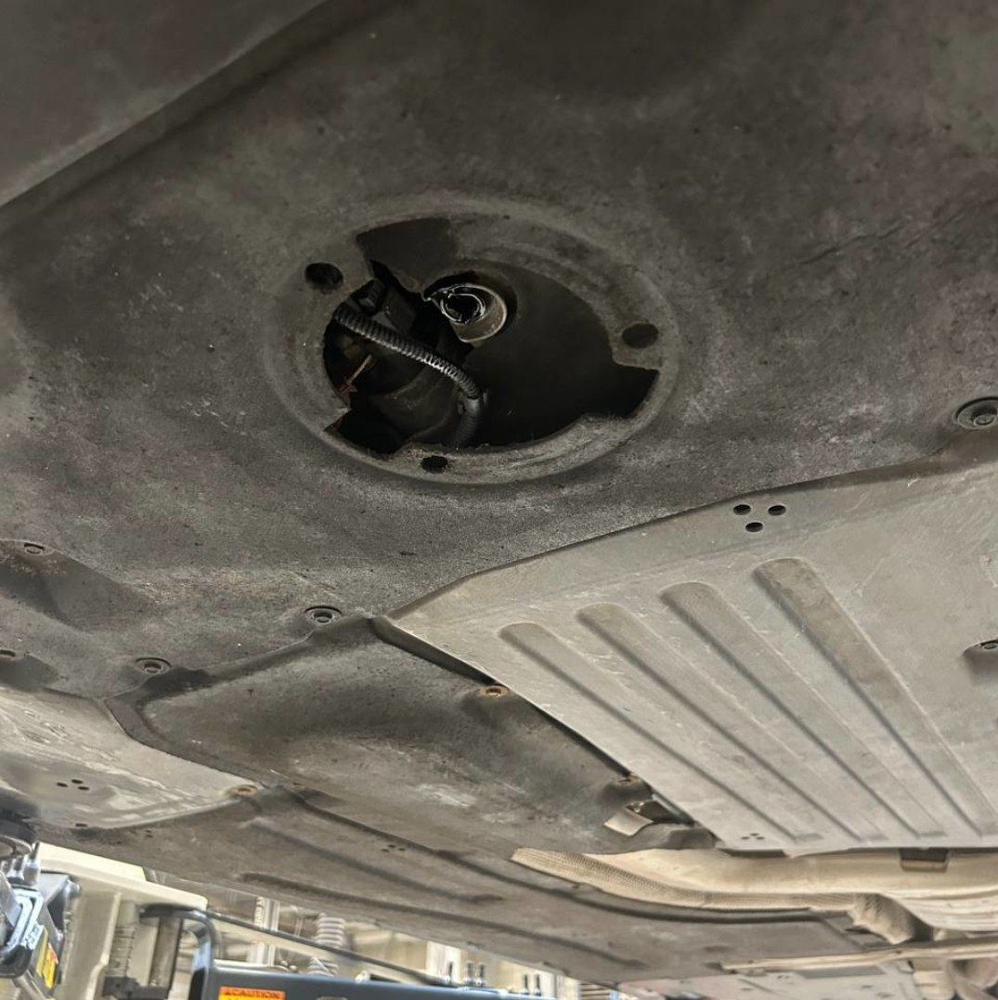

Home / Fluids and filters
BMW Oil Drain Plug: What the Hole in the Undertray Is For
Quick answer
On most of the BMWs I work with, the underbody panel has a round opening that gives access to the engine oil drain plug, so the oil can be drained without removing the whole panel. Raise the car safely, put a pan under the opening, remove the plug, let the oil drain fully, fit a new sealing washer and refit the plug to the torque in your manual.

What the hole is
Look under the front of the engine and you will often see a round opening in the underbody panel. It is simply an access hole for draining the engine oil, and on most of the BMWs I see at work it is standard.
Not every BMW has one. On some cars the panel has to come off, so check yours.
Why it matters
It saves time and screws, because you don't have to remove the whole panel to reach the plug. It is also a good way to be sure you are in the right place. Make sure the plug you open is the engine oil drain plug, not a plug for another fluid.
Before you drain the oil
- Check your manual for the oil specification and the capacity. Many BMWs call for an oil with a BMW approval such as LL-01 or LL-04
- Run the engine briefly so the oil is slightly warm, then let it cool enough to avoid burns
- Raise the car safely on jack stands or a lift, never on a jack alone
- Have a drain pan big enough for the whole capacity
- Get a new sealing washer for the plug
Step by step
- Raise the car and find the opening in the underbody panel.
- Put the drain pan under it, slightly to the side, because the oil comes out in an arc at first.
- Remove the drain plug and let the oil drain fully.
- Clean the plug, fit a new washer and refit the plug. Tighten it to the torque in your manual, because over-tightening can damage the pan.
- Change the oil filter and refill with the correct oil.
- Check the level, start the engine, then check for leaks under the car.
Safety note. Hot oil can burn. Wear gloves, and take used oil to a recycling point.
After the oil change
Many recent BMWs have no dipstick, so check the level on the dashboard or in the menu, as your manual describes. The filler cap under the hood is for adding oil. See What's Under the Hood of a BMW. Reset the service reminder if your car has one.
FAQ
Where is the oil drain plug on a BMW?
Under the engine, usually reached through a round access opening in the underbody panel on the cars I work with. Check your model.
What is the hole in the bottom panel of my BMW?
It is an access opening for draining the engine oil, so the panel doesn't have to be removed.
Do I have to remove the undertray to change the oil?
On many BMWs, no, if there is an access opening. Some cars need the panel removed.
Should I replace the drain plug washer?
Yes. A fresh washer helps prevent a slow leak.
Does a BMW have an oil dipstick?
Many recent BMWs don't. The level is shown on the dashboard or in the menu.
This guide is general information based on personal experience, not professional advice. Check your own car's manual for exact specs and read the disclaimer before starting any job.